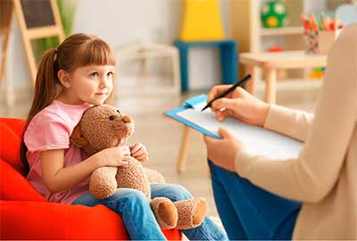

Ayudamos a que los niños crezcan seguros, felices y emocionalmente fuertes. En psicología infantil trabajamos sus emociones, conducta y habilidades sociales, utilizando estrategias adecuadas a su edad. También brindamos orientación a los padres para mejorar la convivencia y apoyar el bienestar de toda la familia.
Responde estas preguntas para recibir una recomendación personalizada sobre la especialidad de psicología más adecuada.
1. ¿Cómo se relaciona tu hijo con otros niños?
2. ¿Tiene dificultades para seguir instrucciones?
3. ¿Presenta problemas en el habla o pronunciación?